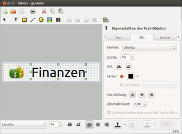

gLabels
Dieser Artikel wurde für die folgenden Ubuntu-Versionen getestet:
Ubuntu 16.04 Xenial Xerus
Ubuntu 14.04 Trusty Tahr
Zum Verständnis dieses Artikels sind folgende Seiten hilfreich:
gLabels  ist ein Programm, mit dessen Hilfe das Erstellen von Visitenkarten, Etiketten und Booklets erleichtert wird. Aus einer Reihe von fertigen Vorlagen für zahlreiche Produkte verschiedener Hersteller kann eine gewählt und die Beschriftung vorgenommen werden. Die Anwendung wurde für die Nutzung unter der Desktop-Umgebung GNOME konzipiert.
ist ein Programm, mit dessen Hilfe das Erstellen von Visitenkarten, Etiketten und Booklets erleichtert wird. Aus einer Reihe von fertigen Vorlagen für zahlreiche Produkte verschiedener Hersteller kann eine gewählt und die Beschriftung vorgenommen werden. Die Anwendung wurde für die Nutzung unter der Desktop-Umgebung GNOME konzipiert.
Installation¶
Das folgende Paket muss installiert werden [1]:
glabels (universe)
 mit apturl
mit apturl
Paketliste zum Kopieren:
sudo apt-get install glabels
sudo aptitude install glabels
Fremdquelle¶
GetDeb bietet eine Fremdquelle für die jeweils aktuellste Version an: gLabels
Hinweis!
Zusätzliche Fremdquellen können das System gefährden.
Bedienung¶
Nach erfolgreicher Installation kann das Programm gestartet werden [2].

Konfiguration¶
Unter "Bearbeiten -> Einstellungen" muss man zunächst die Vorgaben auf "Millimeter" und "A4" abändern. Ohne Änderung kann man zwar Vorlagen im A4-Format anlegen, das Programm beendet sich anschließend aber abrupt bei der Auswahl des Papierformates im "Neues Etikett oder neue Karte"-Dialog. Die zuvor erstellte(n) Vorlage(n) werden dann nicht korrekt gespeichert und müssen manuell aus dem Verzeichnis ~/.glabels/ gelöscht und neu erstellt werden. Ohne vorheriges Löschen wird die Konfiguration bei einer Neuerstellung nicht überschrieben.
Etiketten¶
Die Bedienung des Programms ist einfach. Mit "Neu" wird eine Vorlage aus einer Liste von Herstellern ausgewählt. Die Liste ist übersichtlich nach Hersteller, Artikelnummer und mit einer Kurzbeschreibung versehen sortiert. Die gewählte Vorlage kann nun nach eigenen Wünschen und Vorstellungen gestaltet werden. Falls gewünscht, diese speichern. Abschließend wird diese auf einem Drucker ausgegeben.
Mit gLabels lassen sich auch Etiketten mit Daten aus einer externen Datenquelle beschriften. Diese kann eine Textdatei (CSV oder auch mit vCard-Daten) oder das Evolution-Adressbuch sein. Diese Funktion ist unter "Objekte -> Mischeinstellungen" zu finden. Nach der Auswahl der Datenquelle kann man nicht zu druckende Einträge durch das Entfernen des Häkchens auslassen. Im Etikett selbst werden die Daten per Variable nach dem Schema ${1}..${n} zugewiesen. Eine bebilderte Anleitung liefert das Handbuch unter "Hilfe -> Inhalte -> Document Merge Tutorial".
Vorlagen¶
Es werden bereits eine Reihe von Vorlagen mitgeliefert. Diese befinden sich im Verzeichnis ~/.glabels. Es handelt sich dabei um simple XML-Dateien. Für das Erstellen neuer Etikettenbögen unter "Datei -> Vorlagen-Designer" benötigt man die genauen Größenangaben. Neben eigenem (Ver)-Messen empfiehlt sich ein Blick auf die Verpackung oder Webseite des Herstellers. Dort findet man mitunter genau diese Angaben.
Alle Druckausgaben können auch immer als PDF-Datei ausgegeben werden.

- Erstellt mit Inyoka
-
 2004 – 2017 ubuntuusers.de • Einige Rechte vorbehalten
2004 – 2017 ubuntuusers.de • Einige Rechte vorbehalten
Lizenz • Kontakt • Datenschutz • Impressum • Serverstatus -
Serverhousing gespendet von